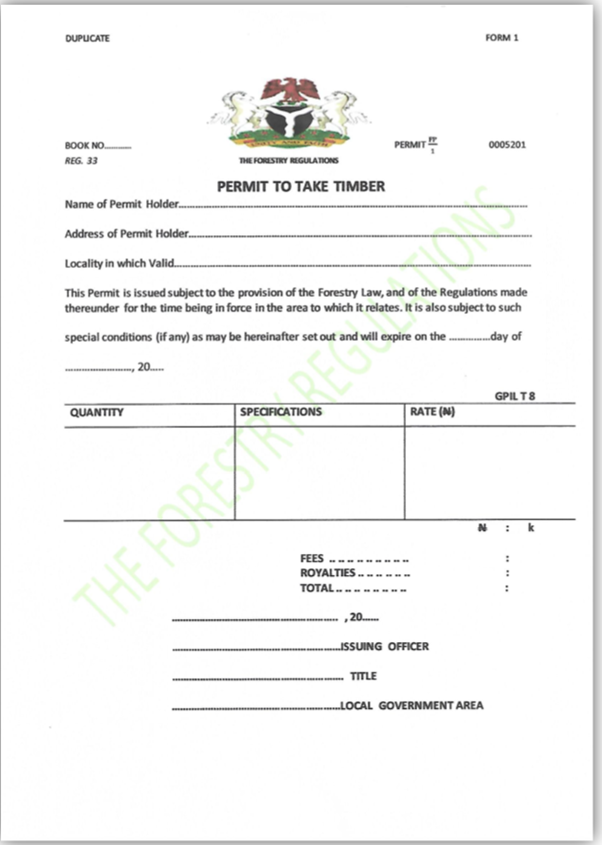
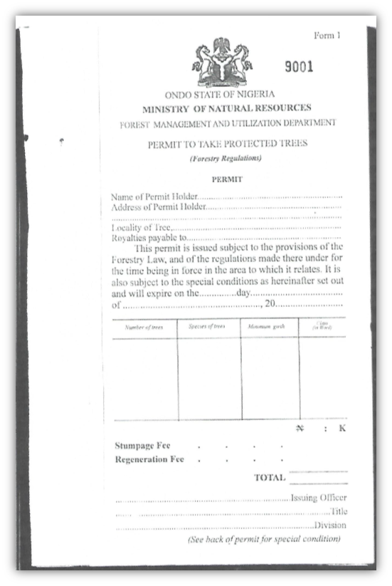
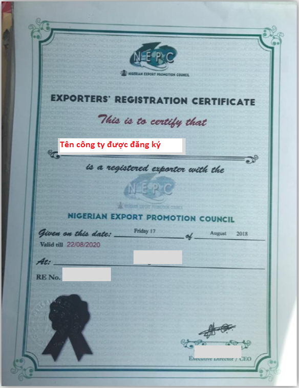

Implementing Timber Leglity Assurance Systems
A guide to comply with timber legality requirements in Cameroon and to support due diligence
Quy định gỗ hợp pháp của Nigeria
Nigeria chưa tham gia đàm phán Hiệp định Đối tác Tự nguyện với Liên minh Châu u. Hệ thống bảo đảm tính hợp pháp của gỗ chưa được phát triển tại quốc gia này, mặc dù có nhiều quy định pháp luật tương đối phức tạp và nhiều rủi ro xác định cho nhà nhập khẩu gỗ. Việc tuân thủ luật pháp quốc gia và giúp ngăn chặn việc nhập khẩu gỗ bất hợp pháp vào các quốc gia khác phụ thuộc nhiều vào việc Chính phủ phát triển một hệ thống kiểm soát và xác minh hiệu quả, các nhà điều hành tuân thủ các quy định pháp luật và tiến hành trách nhiệm giải trình. Bằng cách nhận thức được các quy định pháp luật ở Nigeria được nêu rõ dưới đây, các cơ quan thực thi pháp luật và các nhà nhập khẩu có thể thực hiện các biện pháp kiểm soát và giảm thiểu rủi ro để ngăn chặn gỗ bị khai thác, vận chuyển và buôn bán bất hợp pháp từ Nigeria. Các nhà nhập khẩu và cơ quan xác minh có thể tham khảo hoặc sử dụng thông tin này trong việc thực hiện trách nhiệm giải trình.
Gợi ý xây dựng và thực hiện trách nhiệm giải trình cho các nhà nhập khẩu
Trách nhiệm giải trình là gì?

Phát triển hệ thống trách nhiệm giải trình
Thực hiện trách nhiệm giải trình
Các tài liệu sau đây được chọn theo định nghĩa gỗ hợp pháp của Nigeria và/ hoặc các quy định pháp luật trong các giai đoạn khác nhau của chuỗi cung ứng.
Giấy phép khai thác gỗ
Giấy phép khai thác gỗ cấp cho nhà khai thác gỗ phải do Cục Lâm nghiệp tiểu bang ký và đóng dấu. Kiểm tra chữ ký, con dấu của Cục trưởng Cục Lâm nghiệp, thời hạn giấy phép, diện tích, loại rừng tự nhiên/ rừng trồng, số lượng, quy cách gỗ được khai thác.
Giấy phép khai thác các loài gỗ được bảo vệ
Giấy phép nhận các loài gỗ được bảo vệ phải do cán bộ của Cục Quản lý và sử dụng rừng, Bộ Tài nguyên thiên nhiên tiểu bang ký và đóng dấu, cấp cho nhà khai thác gỗ. Cần kiểm tra chữ ký, con dấu, thời hạn giấy phép, diện tích, loại rừng tự nhiên/ rừng trồng, số lượng, quy cách gỗ được khai thác.
Phê duyệt Báo cáo đánh giá tác động môi trường
Báo cáo đánh giá tác động môi trường được Cục trưởng Cục Đánh giá Môi trường, Bộ Môi trường Liên bang ký phê duyệt cho tổ chức quản lý rừng hoặc nhà khai thác gỗ. Cần kiểm tra chữ ký, con dấu của Cục trưởng Cục Đánh giá Môi trường, tên của chủ dự án phù hợp giấy chứng nhận đăng ký kinh doanh.
Giấy phép tiểu khu
Giấy phép tiểu khu phải do Cục Lâm nghiệp tiểu bang cấp cho nhà khai thác gỗ. Cần kiểm tra thời hạn giấy phép, cần đối chiếu tên chủ sở hữu trên giấy phép với giấy phép khai thác, giấy chứng nhận đăng ký kinh doanh, kiểm tra chữ ký, con dấu đúng thẩm quyền.
Lịch trình bài cây
Lịch trình bài cây phải do cán bộ của Cục Quản lý và Sử dụng rừng, Bộ Tài nguyên thiên nhiên tiểu bang ký và đóng dấu, cấp cho nhà khai thác gỗ. Cần kiểm tra chữ ký, con dấu, thời hạn, chủ sở hữu, khối lượng, loài gỗ phù hợp với giấy phép khai thác gỗ.
Hóa đơn Thanh toán Giấy phép khai thác
Hóa đơn thanh toán giấy phép khai thác phải do Cục Lâm nghiệp tiểu bang cấp cho nhà khai thác gỗ. Cần kiểm tra thời hạn hóa đơn, đối chiếu tên chủ sở hữu trên hóa đơn với giấy phép khai thác, giấy chứng nhận đăng ký kinh doanh.
Hóa đơn phí phân bổ trữ lượng rừng
Hóa đơn phí phân bổ trữ lượng rừng phải do Cục trưởng Cục Lâm nghiệp tiểu bang ký, cấp cho nhà khai thác gỗ. Cần kiểm tra thời hạn hóa đơn, đối chiếu tên chủ sở hữu với giấy phép khai thác, giấy chứng nhận đăng ký kinh doanh, kiểm tra chữ ký, con dấu đúng thẩm quyền.
Giấy chứng nhận hoàn thuế
Giấy chứng nhận hoàn thuế phải do Sở Thuế Nội địa liên bang (FIRS), Bộ Tài chính liên bang đặt tại tiểu bang ký, cấp cho nhà khai thác gỗ. Cần kiểm tra tên chủ sở hữu với giấy chứng nhận đăng ký kinh doanh, mã số thuế, lĩnh vực kinh doanh và hiệu lực của giấy chứng nhận.
Hóa đơn đăng ký phương tiện vận chuyển gỗ
Hóa đơn đăng ký phương tiện vận chuyển gỗ phải do Cục trưởng Cục Lâm nghiệp tiểu bang ký, cấp cho công ty vận chuyển gỗ và nhà khai thác gỗ. Cần kiểm tra thông tin trên hóa đơn, đối chiếu chủ sở hữu gỗ với giấy phép khai thác.
Thư hỗ trợ xuất khẩu

Thư hỗ trợ xuất khẩu phải do Bộ trưởng Bộ Môi trường Liên bang ký và đóng dấu cấp cho nhà khai thác và chế biến gỗ, nhà xuất khẩu gỗ. Cần kiểm tra ngày hiệu lực trên thư; cần đối chiếu chủ sở hữu với giấy phép khai thác, giấy chứng nhận đăng ký kinh doanh, giấy phép chế biến gỗ.
Giấy chứng nhận đăng ký xuất khẩu
Giấy chứng nhận đăng ký xuất khẩu phải do Giám đốc Hội đồng Xúc tiến xuất khẩu ký và đóng dấu, cấp cho nhà xuất khẩu sản phẩm gỗ. Cần kiểm tra ngày hiệu lực trên giấy chứng nhận; cần đối chiếu chủ sở hữu với giấy chứng nhận đăng ký kinh doanh.
Giấy chứng nhận trước khi giao hàng
Giấy chứng nhận trước khi giao hàng phải do Cục trưởng Cục Lâm nghiệp, Bộ Môi trường Liên bang ký và đóng dấu, cấp cho nhà xuất khẩu sản phẩm gỗ. Cần kiểm tra ngày hiệu lực trên giấy chứng nhận; cần đối chiếu chủ sở hữu với giấy chứng nhận đăng ký kinh doanh, kiểm tra các sản phẩm gỗ thực tế với bảng kê.
Giấy phép CITES
Giấy phép CITES phải do Cơ quan quản lý CITES thuộc Cục Lâm nghiệp, Bộ Môi trường Liên bang cấp cho nhà khai thác gỗ. Cần kiểm tra chữ ký và con dấu, diện tích, loại rừng trên giấy phép khai thác, số lượng và quy cách gỗ khai thác.
Giấy chứng nhận đăng ký kinh doanh (giấy chứng nhận thành lập)

Giấy chứng nhận đăng ký kinh doanh phải do Tổng cục trưởng Tổng cục đăng ký doanh nghiệp (Ủy ban các vấn đề doanh nghiệp-CAC)ký, cấp cho doanh nghiệp, bao gồm người khai thác gỗ, người khai thác rừng. Cần kiểm tra thông tin trên giấy chứng nhận, chữ ký và con dấu, đối chiếu với giấy phép khai thác, loại sản phẩm kinh doanh, thời hạn của giấy chứng nhận. Có thể tham khảo thông tin tại: http://publicsearch.cac.gov.ng/comsearch/
Giấy phép vận hành xưởng cưa
Giấy phép vận hành xưởng cưa phải do Cục Lâm nghiệp tiểu bang, thuộc Bộ Nông nghiệp và Phát triển nông thôn cấp cho công ty chế biến gỗ, chủ xưởng cưa. Cần kiểm tra thông tin trên giấy phép, chữ ký và con dấu của Trưởng ban Bảo tồn rừng của tiểu bang, thời hạn hiệu lực của giấy phép.
Hợp đồng lao động
Hợp đồng lao động do công ty lập ra và có chữ ký của người sử dụng lao động và người lao động. Cần kiểm tra nội dung hợp đồng, thông tin, chữ ký và con dấu đầy đủ, chính xác.
Sổ đăng ký của nhà tuyển dụng
Nhà nhập khẩu có thể kiểm tra thông tin của nhà xuất khẩu, nhà khai thác gỗ trên Sổ đăng ký của nhà tuyển dụng về tên doanh nghiệp, địa chỉ, lĩnh vực chế biến, kinh doanh.